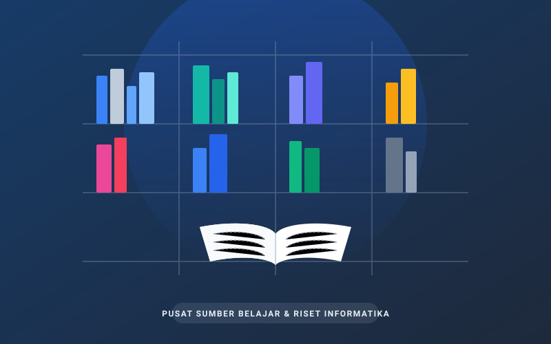

Tersedia
Pemrograman
Temukan ribuan koleksi literatur ilmiah, buku teks pemrograman, referensi rekayasa perangkat lunak, dan arsip penelitian terstruktur melalui SIPUS.

Buku acuan kurikulum yang paling banyak dipinjam mahasiswa semester ini.


Pengadaan literatur mutakhir perpustakaan tahun akademik aktif.


Mendukung kegiatan riset, tugas akhir, dan pembelajaran praktikum bagi sivitas akademika.
Prosedur peminjaman buku acuan mata kuliah dengan masa pinjam 7 hingga 14 hari bagi mahasiswa aktif.
Senin – Jumat pukul 08.00 – 16.30 WIB. Layanan sirkulasi tutup 30 menit sebelum jam operasional berakhir.
Akses ke repositori skripsi, tugas akhir terdahulu, dan meja baca hening berfasilitas colokan listrik & Wi-Fi.